Locații de nuntă în Brașov
- locații în director
- 33
- cu cazare în registrul SITUR
- 11
- medie ponderată Google
- 4,5 / 5
- evaluări Google
- 24.120
Cum alegi o locație în Brașov
În Brașov poți începe comparația cu Naturalia Inn (local pentru evenimente), Pensiunea Casa Bono - Cazare Brasov (pensiune), Rockstadt (local pentru evenimente). Aceste proprietăți apar în primele poziții când luăm în calcul împreună nota și numărul de evaluări Google. Salvează adresele care vă interesează pentru a le așeza apoi alături în fișa de comparare a ofertelor.
În fișele proprietăților poți compara dotări concrete la Naturalia Inn (grădină, intrare accesibilă, parcare accesibilă), Pensiunea Casa Bono - Cazare Brasov (terasă, cazare, parcare gratuită). Pentru oferta de nuntă, întreabă ce spații și servicii dintre cele prezentate intră în rezervarea privată pentru data voastră.
Dacă vin rude de departe, Pensiunea Casa Bono - Cazare Brasov are o unitate de cazare asociată în registrul SITUR. Înregistrarea pentru Casa Bono cuprinde 16 locuri de dormit în 8 spații de cazare. Întreabă câte camere pot fi păstrate pentru aceeași noapte înainte să trimiți invitaților detaliile de rezervare.
Dacă vrei să vezi două proprietăți în aceeași zi, poți continua de la Belvedere Resort Moieciu spre StockEstate Moieciu din Drumul Carului. Punctele lor sunt la 0,4 km în linie dreaptă. Deschide traseul înainte să fixezi ora celei de-a doua vizite, mai ales dacă grupul se deplasează cu autocarul.
Locații pentru vizionare
Ordinea ține cont de nota Google și de numărul evaluărilor. Cum calculăm ordinea
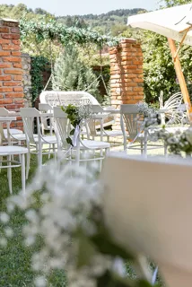
Fotografie a locației · Sursa fotografiei Brașov · Local pentru evenimente
Naturalia Inn
Naturalia Inn, Brașov. La Naturalia, un cuplu și-a ales locul după ce l-a văzut întâi în fotografii, apoi la fața locului.
Piața Unirii street, 4th, 500127 Brașov+40 721 331 977
Fotografie a locației · Sursa fotografiei Brașov · Pensiune
Pensiunea Casa Bono - Cazare Brasov
Pensiunea Casa Bono - Cazare Brasov. Pentru rudele cazate, poți cere un contact precis pentru sosiri și detaliile de predare a camerelor.
Strada Neagoe Basarab 23B, 500002 Brașov+40 771 290 059
Hartă ilustrată Brașov · Local pentru evenimente
Rockstadt
Un vizitator descrie Rockstadt drept club cu concerte rock în centrul Brașovului și spune că a găsit locuri de parcare în zonă.
Str. Nicolae Titulescu 2P, 500010 Brașov+40 770 800 497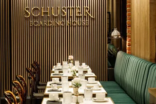
Fotografie a locației · Sursa fotografiei Brașov · Hotel
Schuster Boarding House
Schuster Boarding House. Un oaspete de la Schuster a remarcat liniștea cerută după ora 22 și faptul că pentru masaj era nevoie de programare înainte de sosire.
Strada Peneș Curcanul 5, 500015 Brașov+40 368 440 440
Fotografie a locației · Sursa fotografiei Brașov · Local pentru evenimente
Prestigio Events | Villa HePa
Prestigio Events | Villa HePa, Brașov. Un cuplu își amintește concret luna în care s-a căsătorit la Prestigio Events, mai 2025.
Strada Lacurilor Nr. 35, 35Bis, 500301 Brașov+40 733 833 263
Fotografie a locației · Sursa fotografiei Brașov · Bed & Breakfast
Pensiunea Toscana
Pensiunea Toscana, Brașov. De la Toscana, un oaspete descrie priveliștea către Poiana Brașov, atât de pe balconul camerei, cât și de pe terasă.
Strada Stejerișului 40, 500122 Brașov+40 368 462 217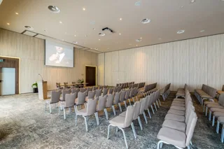
Fotografie a locației · Sursa fotografiei Brașov · Hotel
Kronwell
Un vizitator de la Kronwell a apreciat sauna și jacuzziul, însă i s-a părut dificilă intrarea în parcarea subterană.
Bulevardul Gării 7A, 500203 Brașov+40 368 730 800
Fotografie a locației · Sursa fotografiei Brașov · Centru de evenimente
Q Events Center
Q Events Center. Un cuplu care și-a ținut nunta la Q Events Brașov vorbește în primul rând despre șeful de sală și implicarea lui pe parcursul serii.
Calea București 229, Brașov+40 799 704 704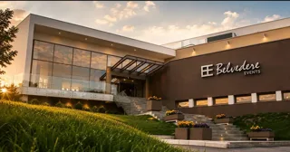
Fotografie a locației · Sursa fotografiei Brașov · Sală de nunți
Belvedere Events
O pereche româno-daneză a ales Belvedere Events pentru a aduna la aceeași nuntă invitați din țară și din străinătate.
Strada Stejerișului 26, 500122 Brașov+40 735 404 165
Fotografie a locației · Sursa fotografiei Brașov · Pensiune
Casa din Noua
Pensiune mică la marginea Brașovului, cu curte, grătar și bucătărie comună; 4,7 din 235 de evaluări. Bună pentru cazarea invitaților.
Strada Gării Noua 23, 500314 Brașov+40 745 089 339
Fotografie a locației · Sursa fotografiei Brașov · Bed & Breakfast
Pensiunea Bada Bing
Pensiunea Bada Bing. În cazul Bada Bing, un vizitator spune că a avut dificultăți în a găsi loc de parcare și că s-ar fi bucurat de un foișor.
Strada Independenței 14, 500157 Brașov+40 736 926 269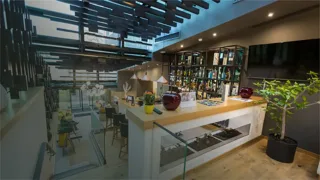
Fotografie a locației · Sursa fotografiei Brașov · Hotel
Belfort Hotel
Hotel de 3 stele lângă promenada de sub Tâmpa, cu mic dejun panoramic la etajul 6. Ce să întrebi despre nunți, parcare și accesul invitaților.
Strada Constantin Dobrogeanu-Gherea 4c, 500003 Brașov+40 368 005 181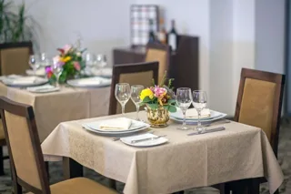
Fotografie a locației · Sursa fotografiei Brașov · Hotel
Victoria Bulevard Hotel
Victoria Bulevard Hotel. Un oaspete care revine de mai mult timp la Victoria Bulevard vorbește despre confortul camerelor și priveliștea de care s-a bucurat.
Bulevardul Victoriei 6A, 500214 Brașov+40 774 444 445
Fotografie a locației · Sursa fotografiei Brașov · Hotel
Belvedere Resort Moieciu
Resort în Moieciu închiriat integral pentru o nuntă de weekend: piscină încălzită, ciubăr cu vedere la munte și cazare pentru invitați.
Drumul Carului, Moieciu, nr 56G Brasov, Drumul Carului, nr. 56G, 507132 Brașov+40 757 694 770
Fotografie a locației · Sursa fotografiei Brașov · Local pentru evenimente
Emotion Events
Sală de evenimente cu grădină în Brașov, cu parcare gratuită și decor lăudat la petreceri private. Întrebări despre capacitate și intrarea din spate.
Strada Mihail Kogălniceanu 15, 500090 Brașov+40 728 609 133
Hartă ilustrată Brașov · Local pentru evenimente
Krongarden Kids & Events
Un părinte care a sărbătorit la Krongarden aniversarea copilului de cinci ani descrie foișorul utilat, băile separate și spațiul de joacă din interior.
Strada Codrul Cosminului 29, 500147 Brașov
Fotografie a locației · Sursa fotografiei Brașov · Local pentru evenimente
Platinum
Un părinte care scrie despre un banchet la Platinum menționează o plată pentru meniu, dar chiar în relatare ezită între două sume.
Strada Mihail Kogălniceanu 13, 500090 Brașov+40 731 124 636
Fotografie a locației · Sursa fotografiei Brașov · Bed & Breakfast
Confort
Pensiune curată pe Strada Tablei din Brașov, care se poate închiria integral; 4,5 din 122 de evaluări. Află cum intri după miezul nopții.
Strada Tablei 27, 060274 Brașov+40 268 425 129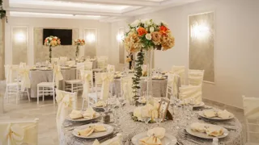
Fotografie a locației · Sursa fotografiei Brașov · Centru de evenimente
Dumbrava Minunată
Restaurant cu terasă și sală de evenimente pe strada Murelor, Brașov: mâncare gătită ca acasă, porții mari. Capacitatea pentru nunți nu e publicată.
Strada Murelor 4, 500301 Brașov+40 740 250 801
Fotografie a locației · Sursa fotografiei Brașov · Bed & Breakfast
Pensiunea Warthe
Pensiunea Warthe, Brașov. La Warthe, luați în calcul dimineața de după nuntă înainte să rezervați întregul grup.
Strada Cibinului 45, 500122 Brașov+40 793 485 053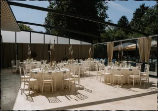
Fotografie a locației · Sursa fotografiei Brașov · Local pentru evenimente
Conacul Albert
Conac de evenimente în Brașov cu acoperiș retractabil, ceremonie în grădină și terasă lângă sală; o nuntă recentă a avut circa 120 de invitați.
Strada Nicovalei 4, Brașov+40 752 018 857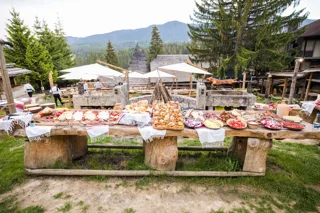
Fotografie a locației · Sursa fotografiei Brașov · Centru de evenimente
Sergiana Catering
Sergiana Catering, Brașov. Un client de la Sergiana descrie o cină la care ospătarii i-au lăsat răgaz să stea la masă în liniște.
Strada Mihail Kogălniceanu 15, 500090 Brașov+40 727 738 747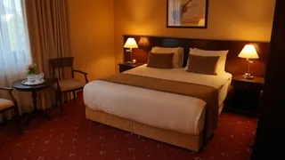
Fotografie a locației · Sursa fotografiei Brașov · Local pentru evenimente
Garden Club
Dacă terasa este motivul pentru care te interesează proprietatea, folosește acea primă discuție pentru a defini exact ce parte din nuntă vrei afară.
Bulevardul Griviței A48, 500173 Brașov+40 711 970 012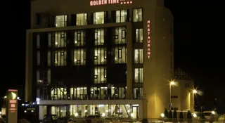
Fotografie a locației · Sursa fotografiei Brașov · Hotel
Golden Time Hotel
Hotel pe Calea București din Brașov, cu restaurant, spa și 1.005 evaluări; listat ca local de evenimente, dar nunțile nu sunt descrise.
Calea București 99, 500360 Brașov+40 268 311 115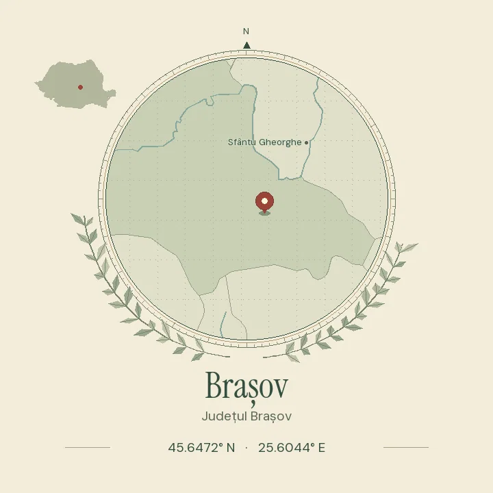
Hartă ilustrată Brașov · Local pentru evenimente
Jon by Chef Jon Jordache Centru de Evenimente
Un cuplu care și-a sărbătorit nunta aici în urmă cu mai mulți ani descrie o discuție despre schimbarea meniului cu puțin timp înainte de petrecere.
Strada Lucian Blaga 8 A, 500008 Brașov+40 741 003 476
Fotografie a locației · Sursa fotografiei Brașov · Hotel
Grand Hotel
La Grand Hotel, un cuplu descrie un mic dejun suficient, cu o selecție restrânsă, și spune că într-o dimineață a fost trezit de lucrări din apropiere.
Strada Gării Noua 6, 500314 Brașov+40 268 336 797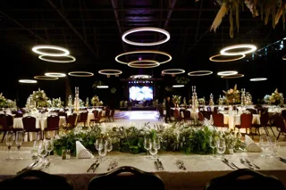
Fotografie a locației · Sursa fotografiei Brașov · Hotel
Lux Divina
Lux Divina. Pentru nunta ta contează observația despre configurație: o sală văzută la concert spune prea puțin despre o cină cu mese și dans.
Strada 13 Decembrie 96, 500116 Brașov+40 749 115 116
Hartă ilustrată Brașov · Hotel
Hotel Aro Palace
Hotel Aro Palace, Brașov. La Aro Palace puteți porni de la o ofertă de nuntă a hotelului și să cereți o completare precisă pentru terasă.
Bulevardul Eroilor 27, 500030 Brașov+40 268 478 800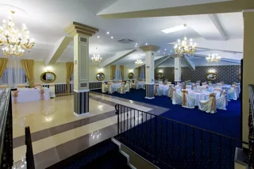
Fotografie a locației · Sursa fotografiei Brașov · Hotel
Conacul din Ardeal
Hotel cu salon de 300 de persoane pe Calea Feldioarei, Brașov; 4,2 din 375 de evaluări. Recenzii mixte la nunți și zgomot peste camere.
Calea Feldioarei 71A, 500483 Brașov+40 766 424 557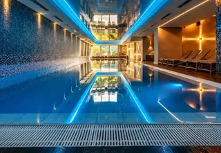
Fotografie a locației · Sursa fotografiei Brașov · Hotel
Grand Hotel Belvedere
Hotel cu priveliște panoramică peste Brașov, în două clădiri separate; recenzii critice despre servicii și parcare. Ce să clarifici.
Strada Stejerișului 26, 500122 Brașov+40 738 745 073
Fotografie a locației · Sursa fotografiei Brașov · Cazare în regim hotelier
Cazare Hotel Centru - Brasov
Cazare cu apartamente cu chicinetă pe strada Castelului din Brașov, nota 4,1. Păreri împărțite despre curățenie și izolarea fonică.
Strada Castelului 58, 500014 Brașov+40 773 774 370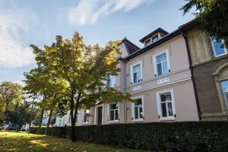
Fotografie a locației · Sursa fotografiei Brașov · Pensiune
Pensiune Ambient
Pensiune Ambient. La Ambient, un călător menționează parcarea și primirea de la micul dejun printre lucrurile care i-au făcut șederea în Brașov mai ușoară.
Strada Iuliu Maniu 62, 500091 Brașov+40 268 547 171
Fotografie a locației · Sursa fotografiei Brașov · Pensiune de familie
Pensiunea Hora
Un oaspete care ajunsese cu mașina la Pensiunea Hora își amintește că a găsit aici parcare gratuită și camere cu băi spațioase.
Strada Mirăslău 14, 500075 Brașov+40 771 330 117
Întrebări despre locațiile din Brașov
Unde pot dormi invitații în Brașov?
În registrul de cazare SITUR găsim Pensiunea Casa Bono - Cazare Brasov (16 locuri de cazare), Schuster Boarding House (41 de locuri de cazare), Pensiunea Toscana (20 de locuri de cazare). Verifică ce camere sunt libere pentru noaptea evenimentului.
Ce proprietăți din Brașov au grădină sau terasă?
Naturalia Inn (grădină); Pensiunea Casa Bono - Cazare Brasov (terasă); Schuster Boarding House (terasă). Cere administratorului condițiile de folosire pentru o petrecere privată.
Care locație din Brașov are cele mai multe evaluări Google?
Hotel Aro Palace are 3.870 de evaluări în profilul Google folosit la documentare. Evaluările acoperă și alte experiențe la proprietate, inclusiv vizitele fără eveniment.
Unde apare o intrare accesibilă în Brașov?
Profilurile Google indică o intrare accesibilă la Naturalia Inn, Prestigio Events | Villa HePa, Q Events Center. Pentru o cununie în exterior, cere detalii despre traseul dintre intrare și zona cu scaune.
Ce alte localități pot include într-o vizionare lângă Brașov?
Cele mai apropiate adrese comparate pe hartă sunt în Drumul Carului, Moieciu de Jos, Timișu de Jos. Găsești mai jos distanțele dintre proprietățile folosite pentru această comparație.
Vizionări în apropiere
- Drumul Carului · 1 locație. Între Belvedere Resort Moieciu și StockEstate Moieciu sunt 0,4 km în linie dreaptă.
- Moieciu de Jos · 4 locații. Între Belvedere Resort Moieciu și Podul Turcului sunt 1,1 km în linie dreaptă.
- Timișu de Jos · 4 locații. Între Dumbrava Minunată și Evenimente La Castel sunt 1,6 km în linie dreaptă.
Alte adrese din aceeași unitate administrativă
Alpin Resort Hotel (Poiana Brașov), Ana Hotels Bradul Poiana Brașov (Poiana Brașov), Ana Hotels Sport Poiana Brașov (Poiana Brașov), Casa Vlasin Pensiune&Restaurant (Poiana Brașov), Centrul de Echitație Poiana Brașov (Poiana Brașov), Elexus Ballroom (Poiana Brașov), Hotel Casa Viorel (Poiana Brașov), Hotel Simona Halep - Poiana Brasov (Poiana Brașov), Hotel Soimul (Poiana Brașov), Monterai (Poiana Brașov), Stâna Turistică Sergiana (Poiana Brașov), Aurelius Imparatul Romanilor (Poiana Brașov), Denisa (Poiana Brașov), Elexus Apartments Poiana Brasov (Poiana Brașov), Hotel Escalade (Poiana Brașov), K2 Alpin - Centru de Evenimente Private si Corporate (Poiana Brașov), Noir Poiana Brasov (Poiana Brașov), Swissôtel Poiana Brasov (Poiana Brașov), Ana Spa Poiana Brașov (Poiana Brașov).